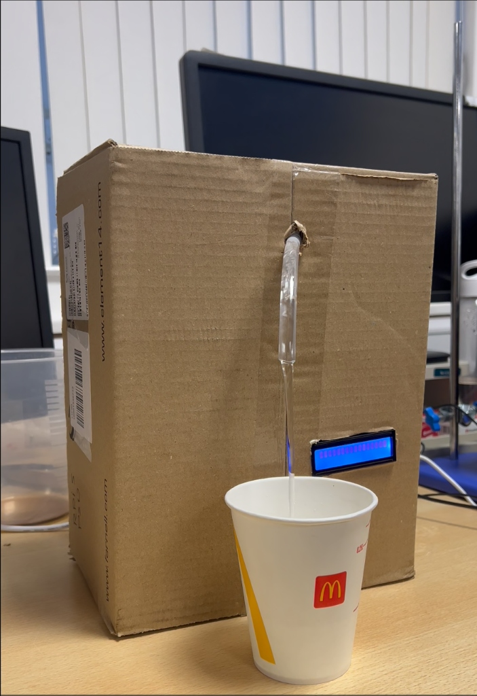
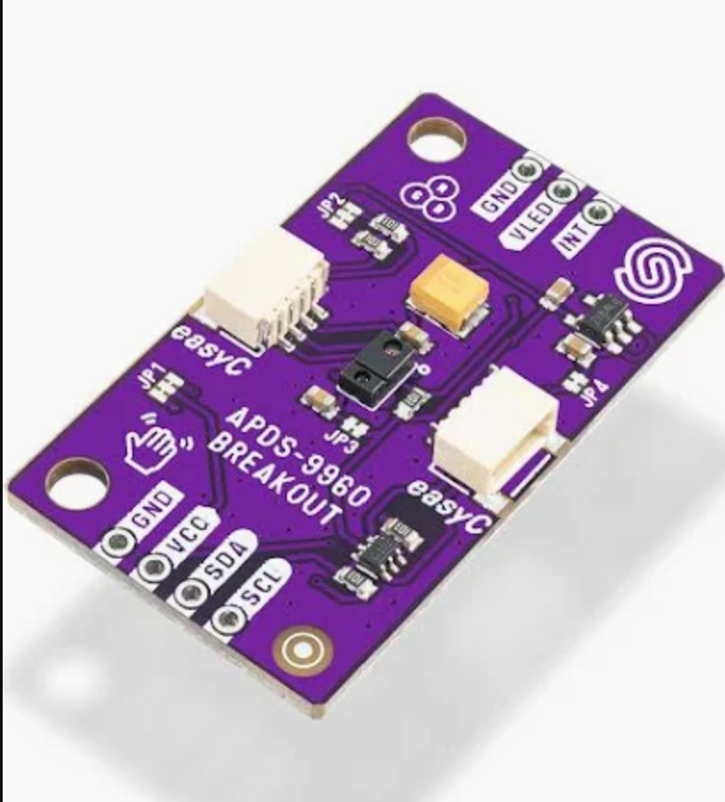
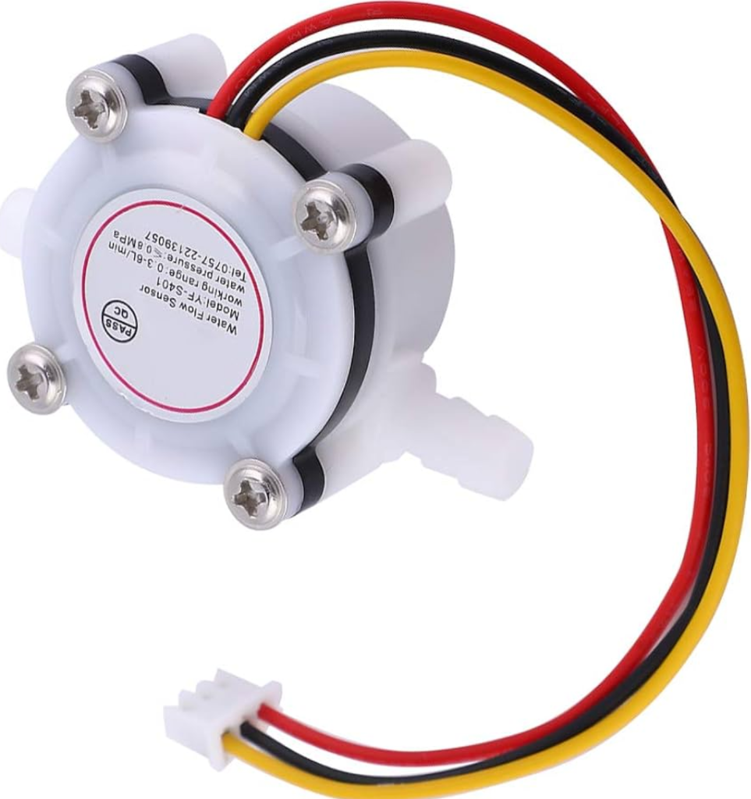
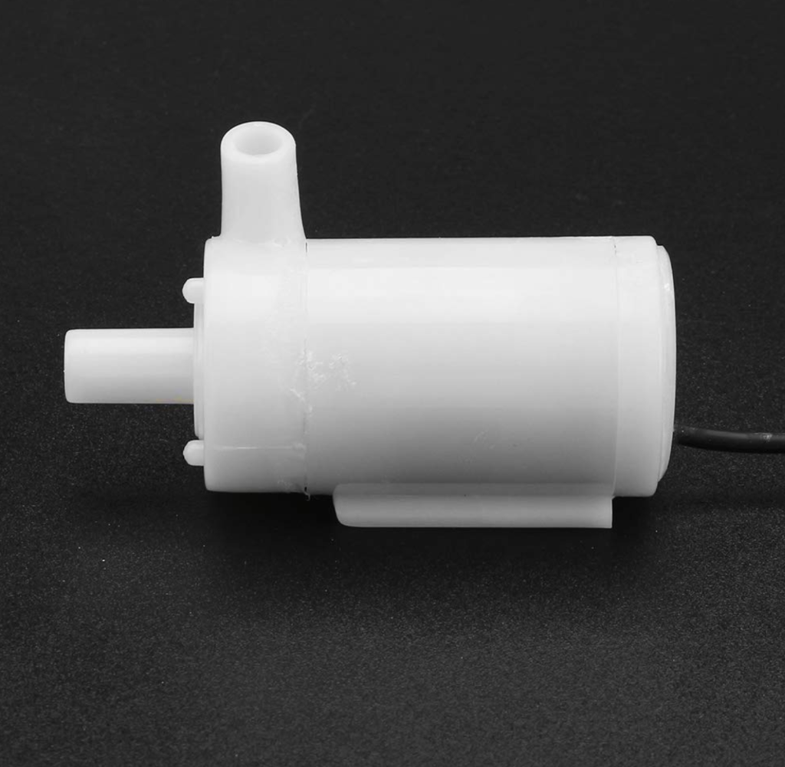
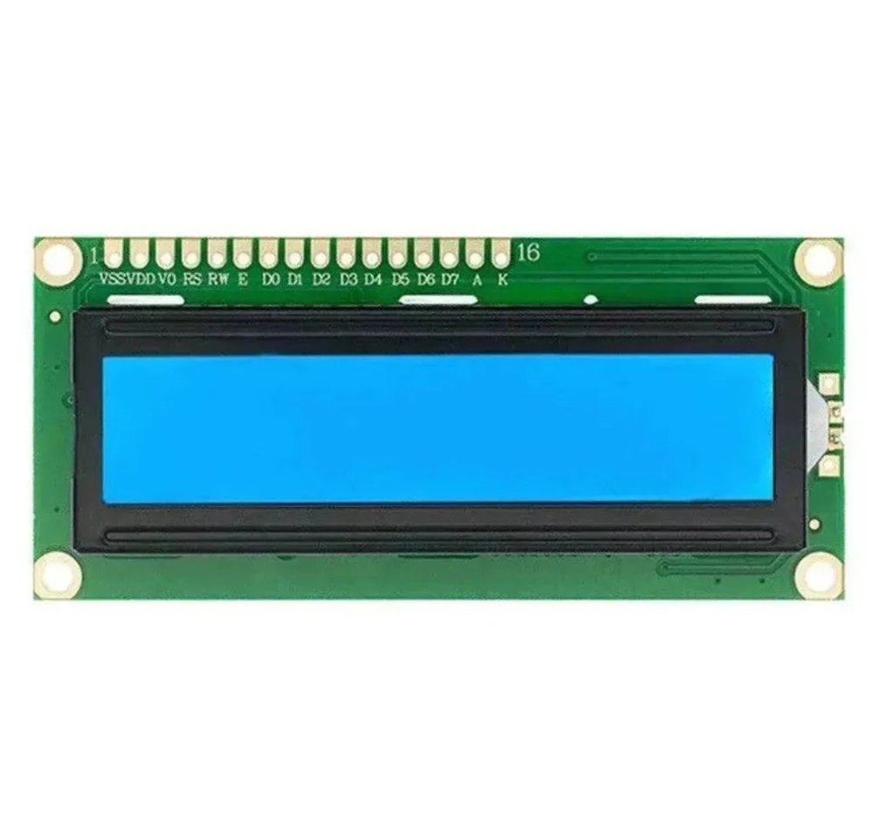
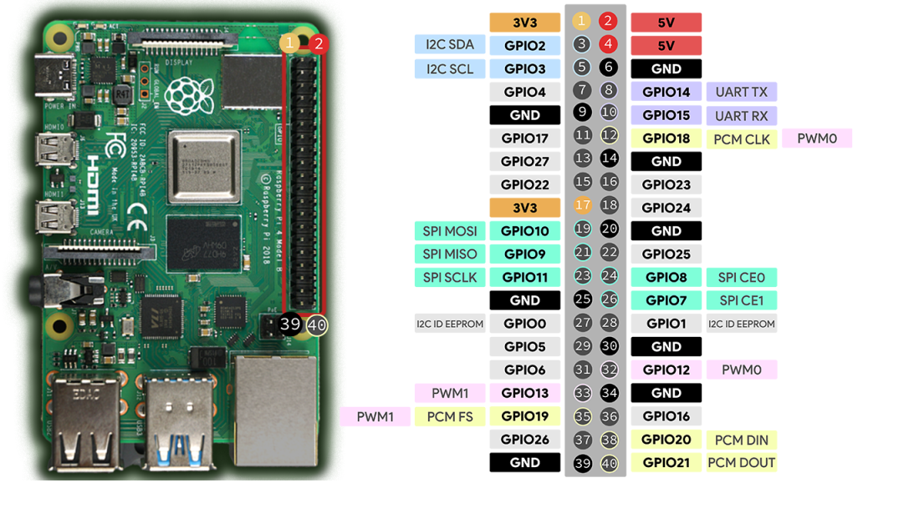
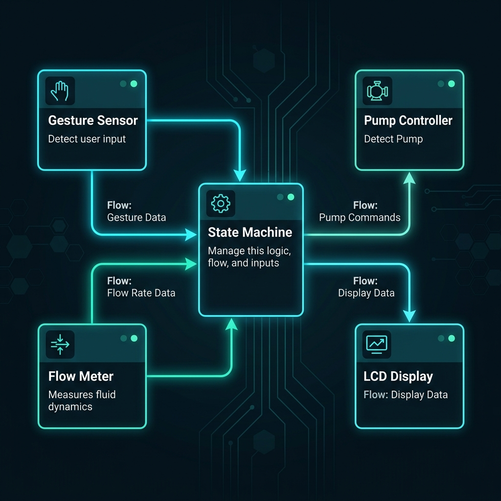
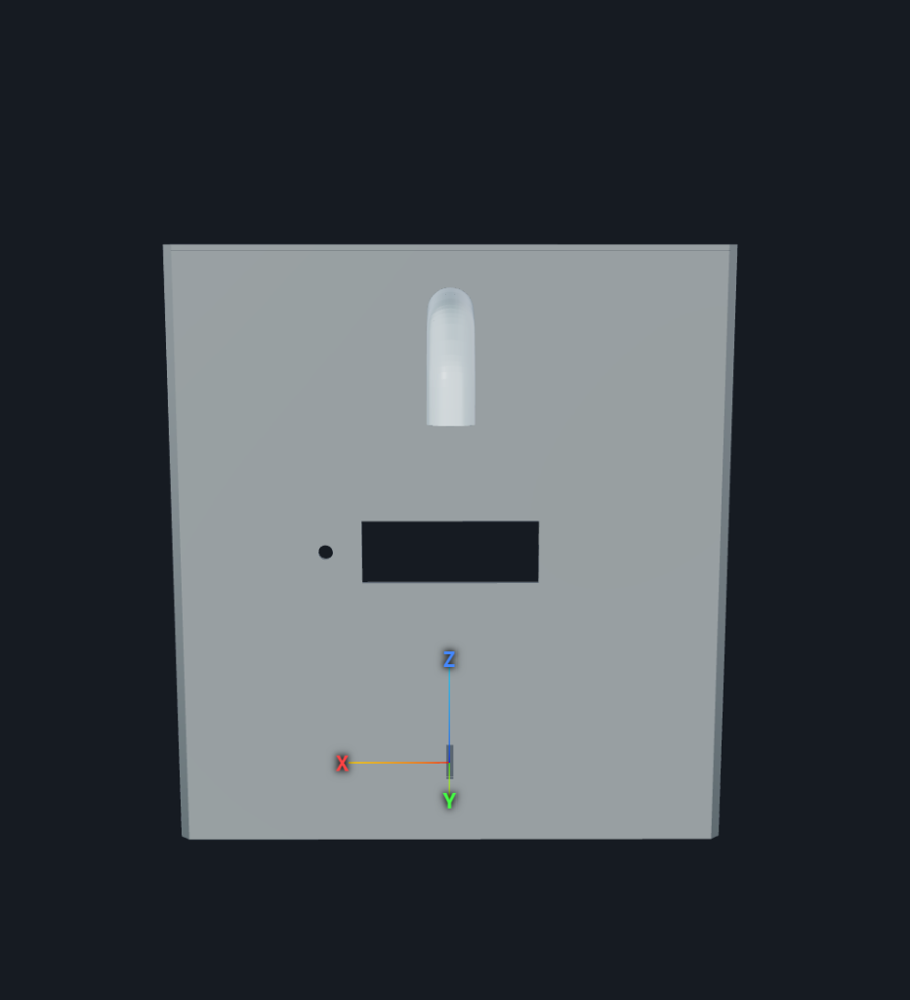
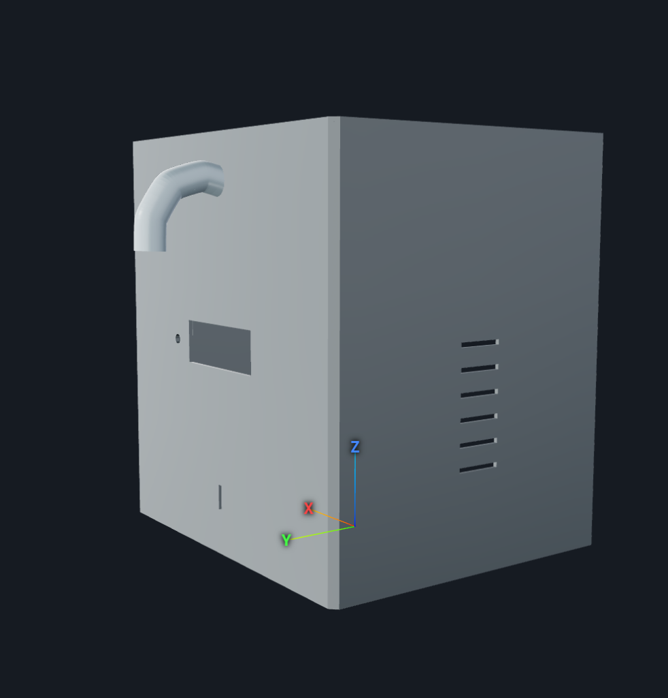

It started with a simple question we kept asking ourselves in the lab: "Why are restaurant drink dispensers so clunky?"
You press a lever, you touch a button, you hold a cup at an awkward angle — and half the time, you overfill and spill.
We thought: what if the machine just knew what you wanted and poured it for you, hands-free?
That idea became FlowFizzy — a touchless automated water dispenser powered by a Raspberry Pi 5.
The concept is straightforward: you pick your cup size with a button, place your cup on the platform,
and the machine detects it with an infrared proximity sensor, starts pumping, counts exactly how much liquid has passed
through the flow sensor, and stops the moment it hits the target. No touching. No spillage. Just precision.

FlowFizzy in action — dispensing into a McDonald's cup, with the LCD showing real-time fill progress.
What made this project exciting wasn't just making water come out of a tube — it was doing it properly.
We wanted to build something that felt like a real embedded product: interrupt-driven I/O, a proper state machine,
SOLID architecture, and code that could pass a professional review. The kind of thing where you could swap out the
pump driver for a different motor and nothing else in the system would break.
We built it over several months in Rankine Lab 509 at the University of Glasgow, starting from bare wires on a breadboard
and working our way up to a 3D-printed enclosure with an integrated sensor mount. This article is the story of that journey.
Hardware
The Components That Make It Work
We deliberately kept the hardware minimal — just four active components plus the Pi itself.
The assessment rewards code quality, not component count, and a simple hardware stack meant we could focus
on making the software architecture genuinely excellent.
The Proximity Sensor — APDS-9960
This tiny purple board is the heart of the touchless interaction. It fires an infrared beam and measures how much light bounces back.
When you slide a cup onto the platform, the proximity reading jumps from ~15 (ambient) to ~100+ (cup present at 10 cm).
We mount it horizontally on the 3D-printed stand, facing inward, so it's naturally protected from water splashes.
Getting this working in C++ was honestly one of the hardest parts. The APDS-9960 has a gesture engine built in that
intercepts proximity data — we spent an entire lab session debugging why PDATA wouldn't update,
only to discover the gesture engine (GEN=1, GMODE=1) was stealing the readings. Once we stripped those registers
out and configured proximity-only mode, it worked perfectly.

The APDS-9960 proximity sensor — the heart of touchless cup detection.
The Flow Meter — YF-S401
This is how we know exactly how much liquid has been dispensed. Inside the YF-S401 is a small turbine with a Hall-effect sensor.
As water flows through, the turbine spins and generates digital pulses — each pulse corresponds to a tiny fraction of a millilitre.
Our C++ driver uses libgpiod edge interrupts to count these pulses with sub-millisecond latency, running on its own
dedicated thread.
Calibration was critical. We ran our ./calibrate tool, pumped water into a measuring jug, and measured:
4,027 pulses = 260 ml, giving us ML_PER_PULSE = 0.064564. That number is baked into
PinConfig.h and gives us ±5 ml accuracy on a 500 ml fill.

The YF-S401 — a Hall-effect turbine sensor that generates digital pulses as water passes through.
The Pump — JT80SL Submersible
A small 5V DC submersible pump that sits at the bottom of the water reservoir. It draws ~220 mA — way more than a GPIO pin can supply —
so we drive it through a TIP122 Darlington transistor with a flyback diode for back-EMF protection.
The Pi just sends a 3.3V logic signal to the transistor's base, and the transistor switches the pump's power rail.

The JT80SL submersible pump — driven via a TIP122 transistor for safe current switching.
The LCD — 16×2 I2C Display
A classic HD44780 display over I2C gives real-time feedback: the selected cup size, fill progress (320ml / 500ml),
and status messages. We only update it on state changes to avoid I2C bus faults from writing every 100 ms.

The 16×2 I2C LCD — provides real-time fill progress and status feedback.
Bill of Materials
Component
Cost
DollaTek APDS-9960 Gesture/Proximity Sensor
£4.99
YF-S401 Water Flow Sensor
£7.45
JT80SL DC Submersible Pump
£5.20
TIP122 Transistor + Diode + Resistor Kit
£2.50
16×2 I2C LCD Display
£6.10
Breadboard & Jumper Wires
£3.50
Silicone Tubing (1 m)
£2.00
Total
£31.74

Raspberry Pi GPIO pinout — our system uses GPIO 2/3 (I2C), GPIO 17 (flow), GPIO 18 (pump), and GPIO 26 (button).
Software
The Architecture Behind the Pour
The software follows a strict event-driven, non-blocking architecture.
There are no polling loops, no sleep() calls, and no busy-waiting.
Every component runs on its own thread, communicating through atomic variables and callbacks.

High-level architecture — each sensor has its own thread; the state machine ticks every 100 ms.
The State Machine
The FillingController is the brain. It runs a finite state machine that transitions through:
SELECTING_SIZE → WAITING_FOR_CUP → CONFIRMING → FILLING → FILL_COMPLETE — and back again.
Every 100 ms, a timerfd-based tick fires, and the controller reads atomic sensor state to decide what to do next.
SOLID Principles — Not Just Buzzwords
We took SOLID seriously. The FillingController depends on abstract interfaces
(IProximitySensor, IPump, IFlowMeter) — it has no idea it's talking to a
Raspberry Pi GPIO pin. You could swap in a completely different pump and the controller wouldn't need a single line changed.
Each hardware driver has exactly one responsibility: FlowMeter counts pulses, PumpController
switches the transistor, GestureSensor reads proximity. All logging goes through a centralised Logger —
no driver ever touches std::cout.
Interrupt-Driven I/O
The flow meter uses libgpiod edge events — the thread literally sleeps until a voltage change on GPIO 17.
No CPU is wasted. Same pattern for the physical button on GPIO 26: the GpioButton driver sleeps until
a press/release edge, then classifies it as a short press (cycle size) or long press (confirm) based on hold duration.
// How the button callback is wired — the lecture's signal-slot pattern // in AquaFlowApp::start()
button_.registerShortPress([this]{
controller_.onShortPress(); // cycles S → M → L → S
});
Safety is non-negotiable for a water dispenser. If the proximity sensor detects the cup has been removed mid-fill
(reading drops below threshold), the state machine kills the pump within < 150 ms — one tick cycle.
The flow meter keeps its count, so if the cup is replaced, filling resumes from where it left off.
Timeline
The Build Journey
From first commit to final demo — here's how FlowFizzy evolved over the semester.
Early March 2026
First Wires on a Breadboard
Initial hardware tests — ultrasonic sensor, pump relay. Translated the Python prototype into C++. Early commits were messy README updates and "test commit" messages.
20 March 2026
The Pump Decision
Switched from the 12V solenoid valve to the JT80SL submersible pump. Wired the TIP122 transistor circuit. Tried powering the pump directly from GPIO (bad idea). Settled on the transistor + flyback diode approach.
Late March 2026
Flow Meter & LCD Integration
Got the YF-S401 counting pulses via libgpiod edge detection. Brought up the 16×2 LCD over I2C. First successful end-to-end fill: pump runs → flow counts → pump stops at target.
Early April 2026
Gesture Sensor Saga
Spent several sessions wrestling with the APDS-9960. Gesture detection worked in Python but not in C++. Eventually found the gesture engine was stealing proximity data. Stripped it out — proximity-only mode worked perfectly.
14 April 2026
The SOLID Refactor
Major architecture overhaul. Applied SRP to every class. Introduced IProximitySensor, IPump, IFlowMeter interfaces. Routed all output through Logger. Removed direct std::cout from every driver. This was the day the codebase went from "student project" to "professional."
20 April 2026
Calibration & Interaction Redesign
Abandoned gesture-based size selection (unreliable). Switched to button-driven model. Calibrated the flow meter: 4,027 pulses = 260 ml. Fixed the proximity threshold to 90 for reliable 10 cm detection with McDonald's cups.
Late April 2026
3D Enclosure & Polish
Designed and printed the enclosure shell with integrated sensor mount, nozzle collar, and ventilation slots using OpenSCAD. The black 3D-printed stand became the signature visual of the project.
May 2026
Qt GUI — Real-Time Monitoring Dashboard
Built a full Qt5 desktop GUI (AquaFlowWindow) that mirrors the hardware controls with mouse-clickable buttons (Cycle Size, Confirm & Start, Reset) and plots live dispensed volume against the target using QCustomPlot at ~25 fps. The GUI runs alongside the embedded state machine — click "Cycle Size" to step through S→M→L, "Confirm & Start" to trigger filling, and watch the real-time volume curve race toward the red target line. The system is now fully operable without touching the physical hardware.


3D enclosure designed in ForgeCad (Java) — front face showing the nozzle slot, LCD window & button port (left); isometric view showing ventilation slots & curved nozzle outlet (right).
The Team
Who Built This
A
Abdullah Alkabbawi
Real-Time Architecture, State Machine Logic, Hardware Integration, Multithreading